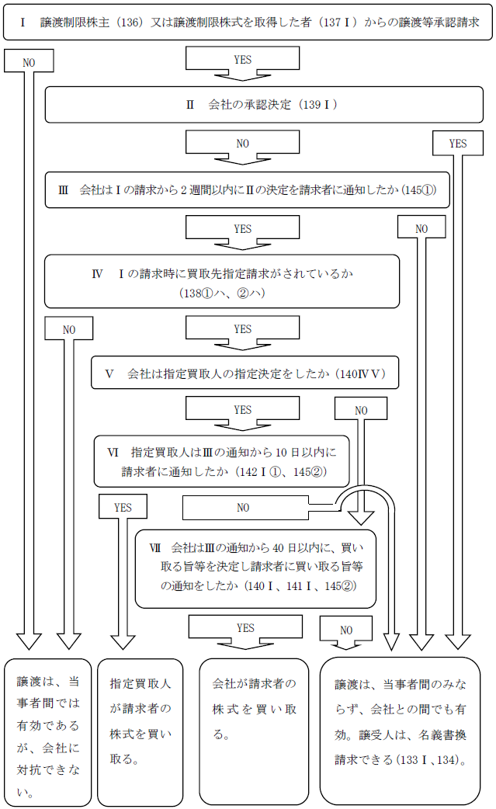

第２編 株式会社
第３章 株式
第５節 株式の譲渡
Ⅰ 株式の譲渡
1. 株式の譲渡方法及び対抗要件
| 株券不発行会社 | 株券発行会社 | ||
| 譲渡方法 | 当事者の意思表示のみ | 当事者の意思表示 ＋ 株券の交付（※） |
|
| 対抗要件 | 対会社 | 株主名簿の名義書換 | 株主名簿の名義書換 |
| 対第三者 | 株券の占有 | ||
（※）自己株式の処分による株式の譲渡については、株式の移転に株券の交付を
要しない（会社法128条1項ただし書）。
相続、合併等の一般承継は、譲渡ではないため、株券の交付なしに移転の効力が生じる。
2. 効果
株券発行会社では、株式の譲渡が株券の交付によってされることにより、株券の占有者は、その株券の適法な所持人と推定される（会社法131条1項）。そのため、以下のような効果が生じる。
①株券を有する株式の譲受人が株式会社に株主名簿の名義書換えを請求する場合、株券を占有してさえいれば、株式を取得したことを積極的に立証する必要がない。
②株式会社も株券の占有者の名義書換請求に応じれば、悪意・重過失がない限り免責される（手形法40条3項類推）。
③株券の占有者から株券の交付を受けた者は、占有者が無権利者であっても、それにつき悪意・重過失がない限り、善意取得することができる（会社法131条2項）。
→本来、前者が無権利であれば、株式譲渡は無効のはずであるが、それでは株式の流通性を害するので、それを防ぐために置かれた制度である。
1. 意義
株式譲渡自由の原則とは、株式会社において、株主が、その株式を自由に他人に譲渡できるとする原則をいう（会社法127条）。
2. 株式譲渡自由の原則の例外
(1) 法律による制限
株券発行前の株式譲渡の制限（会社法128条2項）、自己株式有償取得の制限、子会社による親会社株式の取得・保有の制限（会社法135条）
(2) 定款による株式譲渡制限（会社法107条1項1号、108条1項4号）
(3) 株主が株券不所持制度を利用している場合（会社法217条）
(4) 株主相互間又は株式会社と株主との契約による譲渡制限
Ⅱ 法律による株式譲渡の制限
株券発行会社が株券を発行する前に株式が譲渡された場合、その譲渡は株式会社に対して効力を生じないと規定されている（会社法128条2項）。
これは、当事者間では有効であるが、その譲渡は株式会社に対抗できないという意味である。また、この制限の根拠が株券発行事務の円滑化にあることから、株式会社側から譲渡の効力を認めることはできると解される。
1. 意義
子会社は、原則として、親会社の株式を取得することが禁止されている（会社法135条1項）。
2. 趣旨
親会社と子会社とは法人格は別個であるが、程度の差こそあれ両者の間には財産的な一体関係があり、また、支配従属の関係があるので、原則として、子会社による親会社株式の取得は禁止される。
例えば、Ａ会社が募集株式等の発行をして、その株式全部を100％子会社のＢ会社に引き受けさせれば、Ａ会社はまったく会社財産を増加させずに資本のみを増加させることができ（資本の空洞化）、資本充実の原則に反する。また、親会社がその子会社に対する支配権を利用して子会社をして親会社株式を取得させることによって、株主平等原則に反し、会社支配の公正・株式取引の公正を害する等の弊害が生じ得る。
3. 例外的に取得が許容される場合
例えば、以下のような場合には、例外的に子会社による親会社株式の取得が許容される（会社法135条2項、会社施行規23条）。
| ①事業の全部の譲受け、吸収合併・新設合併又は吸収分割・新設分割により親会社株式を承継する場合 |
| ②吸収分割・株式交換・株式移転に際して親会社株式の割当てを受ける場合 |
| ③剰余金の配当又は残余財産の分配により親会社株式の交付を受ける場合 |
4. 子会社が親会社の株式を取得した場合
子会社は、親会社の株式を取得しても、株主総会で議決権を行使することはできない（会社法308条1項括弧書、325条）。
子会社は、相当の時期にその有する親会社株式を処分しなければならない（会社法135条3項）。子会社が親会社の株式を保有している状態は、好ましくないからである。
Ⅲ 定款による株式譲渡の制限
1. 意義
株式会社は、その発行する全部又は一部の株式の内容として譲渡によるその株式の取得について株式会社の承認を要する旨の定款の定めを設けることができる（会社法107条1項1号、108条1項4号）。このような株式を譲渡制限株式という（会社法2条17号）。
公開会社・非公開会社の区別
| 公開会社 | 株式に譲渡制限が全くついていないｏｒ株式の一部に譲渡制限がついている |
| 非公開会社 | 株式の全部に譲渡制限がついている |
2. 趣旨
株式会社でも、特に小規模な株式会社では株主の個性が会社経営に影響を及ぼすので、会社経営上好ましくない者の参加を防止し、もって会社経営の安定を図ることにある。
1. 定款における規定（会社法107条2項1号、108条2項4号）
定款に株式の譲渡制限に関する規定をおくことを要する。
株式会社の設立の際に原始定款により定めることもできるし、設立後、定款変更によって定めることもできる（会社法309条3項1号、324条3項1号）。
2. 公示手段
株主となろうとする者が不測の損害を被らないように、株式の内容の登記をし（会社法911条3項7号）、かつ、株券発行会社である場合には株券にも譲渡が制限されている旨を記載しなければならない（会社法216条3号）。
3. 制限形態
(1) 制限の範囲
①全面的に譲渡を禁止することは、許されない。
②会社法の規定よりも投下資本の回収を容易にすること、すなわち制限の軽減は認められる。また、定款の定めによって、一定の場合においては株式会社が譲渡を承認したものとみなす旨を定めることもできる（会社法107条2項1号ロ、108条2項4号）。
ex1. 株主間での譲渡につき承認を要しない旨を定款に定めることができる。
ex2. 特定の属性を有する者（ex. 譲受人が従業員であるとき）に対する譲渡については承認を要しないものとする旨を定款に定めることができる。
しかし、株主平等原則に反する場合には許されない。
ex. 外国人株主が株式を譲渡する場合に限り譲渡承認機関の承認を要するとする等売主に着目した制限は、制限を軽減するものではあるが、株主平等原則に反し許されない。外国人はすでに株主であり、株主平等原則が働く。
cf. 「外国人に株式を譲渡する場合は、譲渡承認機関の承認を要する」という内容の定款の定めは許される。外国人はまだ株主ではないので、株主平等原則が働かない。
(2) 譲渡承認機関
(a) 原則
株式の譲渡承認機関は、原則として、以下のようになっている（会社法139条1項本文）。
| 取締役会設置会社 | 取締役会非設置会社 |
| 取締役会の決議 | 株主総会（普通決議） |
(b) 別段の定め
譲渡承認機関について、定款で別段の定めをすることもできる（会社法139条1項ただし書）。
※別段の定めによる承認機関の例
・代表取締役を承認機関とする
・取締役会設置会社で株主総会を承認機関とする
・取締役会非設置会社で「取締役の過半数の承認を要する」とする
・「当会社の承認を要する」という定め
譲渡制限制度は、株式会社にとって好ましくない者の参入を排除するために、会社側が譲渡承認の可否を判断できる点が重要なのであって、承認機関をどこにするかは二次的な事項にすぎないため、このような別段の定めも認められる。
また、種類株式発行会社では、種類株式の内容として譲渡制限規定を定款で定めた場合には、当該種類株式の種類株主総会を譲渡承認機関とすることができる。
ただし、異なる種類の株式の種類株主総会を譲渡承認機関とすることはできない（登研804P.61）。
4. 適用範囲
相続等の一般承継については、譲渡制限の対象にならない。法律上当然に移転するからである。
また、株式の質入れについては制限されないが、質権が実行された場合には適用がある。
【譲渡等承認請求手続の流れ】（会社法136条～145条）

定款による譲渡制限がなされている場合においても、株主の投下資本の回収可能性を保障するために、会社法は詳細な規定を置いている。
1. 譲渡承認請求
(1) 請求
株式を譲渡しようとする株主は、株式会社に対し、譲渡による取得を承認するか否かの決定をすることの請求をすることができる（会社法138条1号、136条）。なお、株式取得者も同様の請求をすることができる（会社法138条2号、137条）。
これらの請求において、「株式会社が譲渡による取得の承認をしない決定をする場合は、株式会社又は指定買取人が譲渡制限株式を買い取れ」という請求をすることができる（会社法138条1号ハ、2号ハ）。
(2) 請求に対する決定
上記の請求に対する決定は、前述のように、定款に別段の定めがある場合を除き、以下の機関の決議による（会社法139条1項）。
| 取締役会設置会社 | 取締役会非設置会社 |
| 取締役会 | 株主総会 |
株式会社がこの決定をしたときは、譲渡等承認請求者に対し、決定の内容を通知しなければならない（会社法139条2項）。
以下の場合には、株式会社は承認をする旨の決定をしたものとみなされる（みなし承認。会社法145条、会社施行規26条）。
| ①株式会社が譲渡等承認請求の日から2週間以内に承認するか否かの決定の内容を通知しなかった場合 |
| ②株式会社が承認しない旨の通知をしてから40日以内に対象株式を買い取る旨等の通知をしない場合（指定買取人が、承認しない旨の通知をしてから10日以内に対象株式を買い取る旨等の通知をした場合を除く） |
| ③法務省令で定める場合 |
2. 株式会社又は指定買取人による買取り
(1) 株式会社による買取り
株式会社は、前述の請求を受けた場合において、譲渡を承認しない決定をしたときは、当該譲渡制限株式を買い取らなくてはならない（会社法140条1項）。この場合、株主総会の特別決議を要する（会社法140条2項、309条2項1号）。特定の株主のみ払戻しをすることになるからである。この株主総会では、他の株主の全員が議決権を行使できない場合を除き、譲渡等承認請求者は議決権を行使できない（会社法140条3項）。
株式会社は、この決定をした場合、一株当たり純資産額に対象株式の数を乗じて得た額をその本店の所在地の供託所に供託し、かつ、その供託を証する書面（供託書正本）を譲渡等承認請求者に交付し、通知しなければならない（会社法141条2項、1項）。株式会社と譲渡等承認請求者との間には信頼関係がないのが通常であるため、譲渡等承認請求者が確実に対価を受け取れるよう供託をすることが要件とされている。
(2) 指定買取人による買取り
また、株式会社は、対象株式の全部又は一部を買い取る者（指定買取人）を指定することもできる（会社法140条4項）。この指定については、あらかじめ定款で買取人を定めておくこともできるし、そうでない場合には、以下の機関が指定する（会社法140条5項、309条2項1号）。
| 取締役会設置会社 | 取締役会非設置会社 |
| 取締役会 | 株主総会（特別決議） |
なお、指定買取人をあらかじめ定款で定めた場合でも、その定めを登記することはできない。
※買取請求の撤回
譲渡承認に際して株式の買取りを請求した者は、株式会社又は指定買取人から買取りの通知を受けた後は、通知者（株式会社又は指定買取人）の承諾を得ない限り、その請求を撤回できない（会社法143条）。株式会社又は指定買取人の買取りのための資金準備等が無駄になるのを防ぐ趣旨である。
3. 売買価格の決定
(1) 売買価格は当事者の協議で決定される（会社法144条1項、7項）。
(2) 合意が成立しない場合には、当事者のいずれからでも、株式会社等による買取りの決定の通知のあった日から20日以内に、裁判所に対して売買価格の決定の申立てをすることができる（会社法144条2項、7項）。
協議が調わない場合であって、かつ、20日以内に裁判所への申立てもない場合には、1株あたりの純資産額に対象株式の数を乗じた額が売買価格となる（会社法144条5項）。
| 対会社間 | 無効（株式会社は株主名簿の名義書換請求を拒絶できる） |
| 当事者間 | 有効 ※ |
※ 譲渡制限株式の趣旨は、もっぱら株式会社にとって好ましくない者が株主として権利行使するのを防ぐことにあるので、株式会社との関係で効力を有しないとすれば足りるからである（最判昭48.6.15 ）。
※一人会社で取締役会の承認がない場合
定款に株式譲渡制限の定めがある一人会社では、株主が保有する株式を譲渡した場合の譲渡の効力について、判例は、定款所定の取締役会による承認がなくても、その譲渡は株式会社に対する関係でも有効であるとしている（最判平5.3.30 ）。株式の譲渡制限に関する規定の趣旨は、専ら株式会社にとって好ましくない者が株主となることを防止し、もって譲渡人以外の株主を保護することにあるからである。
1. 株式の譲渡制限に関する定めの設定の登記
【申請例33 株式の譲渡制限に関する規定 設定（株券発行会社・現に発行）】
事例： 令和○年6月28日、株主総会において、下記の内容の株式の譲渡制限に関する規定を設定する定款変更の決議がなされた。なお、当該株式会社は、定款に株券を発行する旨の定めを置いており、現に株券を発行している。
「当会社の株式は、取締役会の承認がなければ譲渡することができない。」
| 1. 登記の事由 1. 登記すべき事項 | 株式の譲渡制限に関する規定の設定 令和○年6月28日設定 株式の譲渡制限に関する規定 当会社の株式は、取締役会の承認がなければ譲渡することができない。 | 1. 登録免許税 1. 添付書面 | 金3万円 株主総会議事録 1通 株主の氏名又は名称、住所及び議決権数等を証する書面（株主リスト） 1通 株券提供公告をしたことを証する書面 1通 委任状 1通 |
|---|
| 株式の譲渡制限に関する規定 | 当会社の株式は、取締役会の承認がなければ譲渡することができない。 令和○年6月28日設定 令和○年6月30日登記 |
※株式の譲渡制限に係る事項は、登記記録の「発行する株式の内容」欄や「発行する各種類の株式の内容」欄ではなく、「株式の譲渡制限に関する規定」欄に記録される（平18.3.31民商782）。これは、株式の譲渡制限に係る事項は、当該株式会社が会社法上の公開会社か否かという、法の適用関係を判断する基準となるものであるから、より明示的に公示することが望ましいためである。
(1) 登記の事由
「株式の譲渡制限に関する規定の設定」と記載する。
(2) 登記すべき事項
「年月日設定
株式の譲渡制限に関する規定
当会社の株式は、取締役会の承認がなければ譲渡することができない。」
等と記載する。
※年月日は、株主総会の決議日を記載する。株主総会で当該定款変更の効力発生日を定めた場合には、その効力発生日を記載する。
※譲渡承認機関により、承認機関の記載は変わる。
(3) 添付書面
ⅰ 株主総会議事録
株式の譲渡制限に関する規定の設定を決議した株主総会の議事録（会社法309条3項の特殊決議の要件を満たすもの）
ⅱ 株主の氏名又は名称、住所及び議決権数等を証する書面（株主リスト）（商登規61条3項）
具体的には、代表者作成の証明書がこれに当たる。
ⅲ 株券提供公告をしたことを証する書面（株券発行会社で、実際に株券を発行している場合）
株券発行会社で、株式の全部について株券を発行していない場合には、株式の全部について株券を発行していないことを証する書面を添付する（具体的には株主名簿が当たる）。
株券不発行会社では、株券を発行していないことを証する書面も不要である。登記記録に株券を発行する旨の定めがないので、登記官は登記簿を見たら株券不発行会社であることがわかるからである。
※以下、本テキストでは、このⅲの書面を「株券提供公告関係書面」という。
ⅳ 委任状
2. 株式の譲渡制限に関する定めの変更の登記
株式の譲渡制限に関する定めは、株主総会の特別決議による定款変更で変更することができる。変更する場合、株主等に対する通知・公告や株券提供公告は不要である。
【申請例34 株式の譲渡制限に関する規定 変更】
事例： 令和○年6月28日、株主総会において、株式の譲渡制限に関する規定について、承認機関を取締役会から代表取締役へ変更する旨、下記のとおりに定款変更の決議がなされた。なお、当該株式会社は、定款に株券を発行する旨の定めを置いており、現に株券を発行している。
「当会社の株式は、代表取締役の承認がなければ譲渡することができない。」
| 1. 登記の事由 1. 登記すべき事項 | 株式の譲渡制限に関する規定の変更 令和○年6月28日変更 株式の譲渡制限に関する規定 当会社の株式は、代表取締役の承認がなければ譲渡することができない。 | 1. 登録免許税 1. 添付書面 | 金3万円 株主総会議事録 1通 株主の氏名又は名称、住所及び議決権数等を証する書面（株主リスト） 1通 委任状 1通 |
|---|
※譲渡承認機関が廃止された場合
譲渡承認機関を登記記録上明示している場合において、当該機関が存在しなくなったとき（ex. 機関設計の変更や会社の解散）は、株式の譲渡制限に関する規定についても定款を変更して、その旨を登記しなければならない。
もっとも、これを看過して一方のみについて変更の登記を申請しても、当該登記申請が、却下されるわけではないと解されている。譲渡制限規定は、登記記録上「株式・資本区」に登記されるため、「役員区」との一致は「役員区」に登記される事項ほど厳格には要求されないからである。
ex. 承認機関を取締役会として株式の譲渡制限に関する規定を登記している会社が、取締役会を廃止する旨の定款変更をして、取締役会設置会社の定めの廃止の登記のみを申請した場合でも、当該申請は却下しないものとして取り扱われている。
3. 株式の譲渡制限に関する定めの廃止の登記
株式の譲渡制限に関する定めは、株主総会の特別決議による定款変更で廃止することができる。廃止する場合、株主等に対する通知・公告や株券提供公告は不要である。
【申請例35 株式の譲渡制限に関する規定 廃止】
事例： 令和○年6月28日、株主総会において、株式の譲渡制限に関する規定を廃止する決議がなされた。
| 1. 登記の事由 1. 登記すべき事項 | 株式の譲渡制限に関する規定の廃止 令和○年6月28日株式の譲渡制限に関する規定廃止 | 1. 登録免許税 1. 添付書面 | 金3万円 株主総会議事録 1通 株主の氏名又は名称、住所及び議決権数等を証する書面（株主リスト） 1通 委任状 1通 |
|---|
| 株式の譲渡制限に関する規定 | 当会社の株式は、取締役会の承認がなければ譲渡することができない。 平成21年10月1日設定 平成21年10月8日登記 |
| 令和○年6月28日廃止 令和○年7月5日登記 |
※株式の譲渡制限に関する定めの廃止と機関設計
株式の譲渡制限に関する規定を廃止すると、非公開会社は公開会社となり、取締役会の設置が強制される等機関設計に制約を生ずる。これにより、当該株式会社の従来の機関設計が許容されないものとなる場合、株式の譲渡制限に関する規定の廃止の登記の申請と同時に、機関設計に関する変更の登記を申請しない限り、株式の譲渡制限に関する定めの廃止の登記の申請は却下されると解されている（商登法24条9号）。
※役員の任期満了
公開会社に移行することにより、在任中の取締役、会計参与及び監査役の任期は満了するため（会社法332条7項3号、334条1項、336条4項4号）、必要な員数の役員を選任しなければならない（監査等委員会設置会社及び指名委員会等設置会社を除く）。
(1) 添付書面
①株主総会議事録
株式の譲渡制限に関する規定の廃止の定款変更決議をした株主総会の議事録（特別決議の要件を満たすもの）
②株主の氏名又は名称、住所及び議決権数等を証する書面（株主リスト）（商登規61条3項）
具体的には、代表者作成の証明書がこれに当たる。
③委任状
(2) 登録免許税
申請件数1件につき、金3万円（登免法別表1.24(1)ツ）。